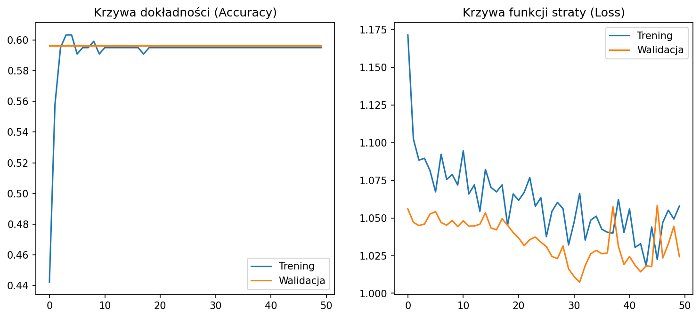
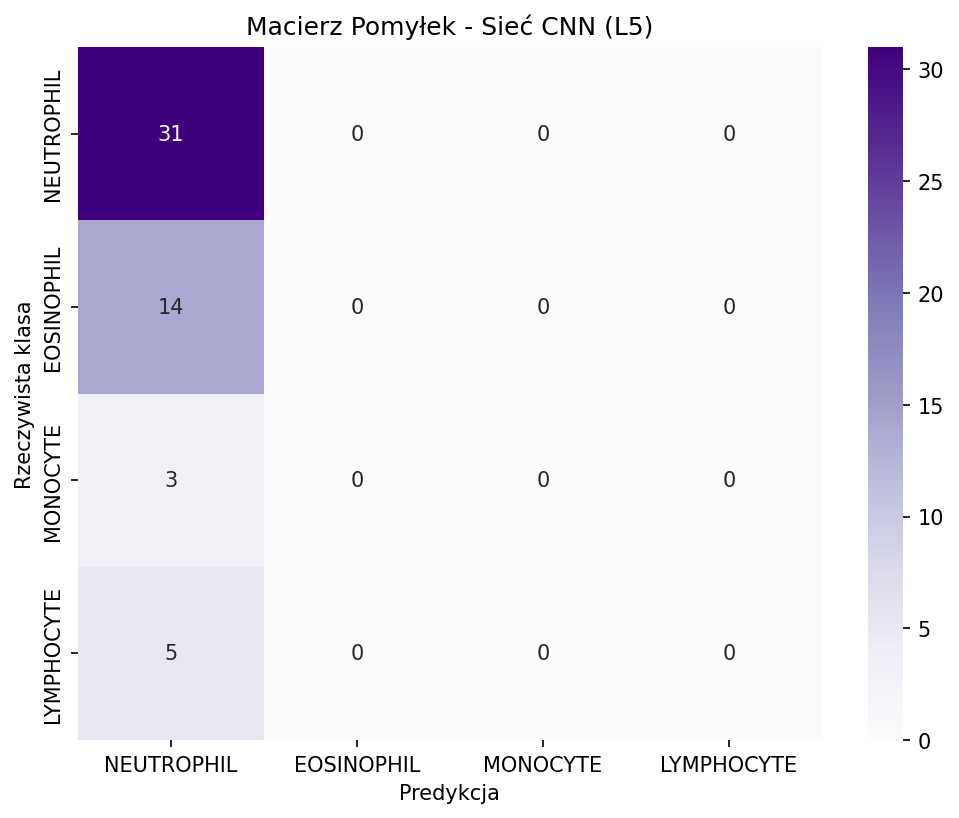

🔬 Zintegrowany Raport Analityczny: Klasyfikacja Leukocytów
1. Opis Zbioru Danych i Problem Niezbalansowania Klas
Projekt realizowany jest na bazie danych mikroskopowych zawierających obrazy białych krwinek (WBC). Analiza wstępna pliku labels.csv wykazała silną asymetrię liczebnościową klas (Neutrofile: 217, Eozynofile: 91, Limfocyty: 34, Monocyty: 22). Ze względu na krytycznie niską reprezentację klasy BASOPHIL (jedynie 3 wystąpienia w całym zbiorze), została ona wyłączona z procesu modelowania w celu uniknięcia błędów stratyfikacji danych (train_test_split) podczas podziału na zbiory uczący, walidacyjny i testowy.
2. Podejście Klasyczne CV (L3) - Segmentacja i Reguły Geometryczne
Zasady i Reguły Klasyfikacji dla Typów Komórek:
- EOSINOPHIL: Detekcja obecności jądra w masce fioletowej (HSV) skorelowana z silną obecnością ziarnistości kwasochłonnych w dedykowanej masce czerwonej (wyznaczonej z połączonych krańców osi Hue).
- NEUTROPHIL: Komórki charakteryzujące się jądrem wielopłatowym (liczba segmentów wyznaczona transformatą dystansową i Connective Components > 1) lub niskim współczynnikiem okrągłości (< 0.55).
- LYMPHOCYTE: Małe jądra o regularnym kształcie, charakteryzujące się wysoką okrągłością (≥ 0.75) oraz małą powierzchnią całkowitą (< 7500 px).
- MONOCYTE: Duże komórki o pofalowanym, nieregularnymjądre jednopłatowym, niespełniające restrykcyjnych kryteriów geometrycznych limfocytów.
Wyniki Ekstrakcji i Klasyfikacji Regułowej (Konsola + Macierz Pomyłek):
Przetwarzanie obrazów dla 4 oficjalnych klas (bez bazofili)...
--- RESTRUKTURYZACJA DANYCH ZAKOŃCZONA (OSTATECZNE 4 KLASY) ---
Neutrofile: 237 | Eozynofile: 88 | Monocyty: 39 | Limfocyty: 2
=========== RAPORT ANALITYCZNY CV (4 KLASY) ==============
1) WYKRYWANIE OGÓŁEM: 363/408 komórek (88.97%)
2) KLASYFIKACJA TYPÓW (Accuracy): 48.04%
=================================================
================ RAPORT KLASYFIKACJI (L3) ================
precision recall f1-score support
EOSINOPHIL 0.36 0.33 0.34 88
LYMPHOCYTE 1.00 0.06 0.11 33
MONOCYTE 0.08 0.15 0.11 20
NEUTROPHIL 0.71 0.79 0.75 206
accuracy 0.56 347
macro avg 0.54 0.33 0.33 347
weighted avg 0.61 0.56 0.55 347
Wizualizacja Wyników Klasycznych:
⚠️ Nie znaleziono pliku segmentacja_klasyczna_l3.png
Graficzna Macierz Pomyłek - L3

3. Podejście Głębokie - Sieć Konwolucyjna CNN (L5)
Opis Parametrów i Architektury Sieci:
- Warstwa Wejściowa: Skalowanie obrazu wejściowego do rozdzielczości 128x128 pikseli o 3 kanałach barwnych (RGB).
- Segment Ekstrakcji Cech (Splotowy): 3 sekwencyjne bloki konwolucyjne (Conv2D: 32, 64, 128 filtrów z funkcją aktywacji ReLU) połączone bezpośrednio z warstwami redukcji przestrzennej MaxPooling2D (rozmiar okna 2x2).
- Klasyfikator Gęsty: Warstwa spłaszczająca Flatten, warstwa gęsta Dense (128 neuronów), warstwa regularyzacyjna Dropout(0.5) redukująca ryzyko przeuczenia, oraz wyjściowa warstwa Softmax z 4 neuronami odpowiadającymi klasom decyzyznym.
- Optymalizator i Hiperparametry: Algorytm Adam, funkcja straty:
categorical_crossentropy. Trening przeprowadzony na przestrzeni 50 epok przy wielkości paczki (Batch Size) równej 64.
Uruchomiona Augmentacja Danych (Wymogi z opisu PDF):
Ze względu na małą liczebność zbioru bazowego (242 obrazy w zbiorze uczącym), wdrożono transformacje w locie (on-the-fly) za pomocą narzędzia
Ze względu na małą liczebność zbioru bazowego (242 obrazy w zbiorze uczącym), wdrożono transformacje w locie (on-the-fly) za pomocą narzędzia
ImageDataGenerator. Zastosowano: rotacje do 45°, losowe przesunięcia osiowe o 20%, losowy zoom o 15% oraz losową modyfikację jasności w przedziale [0.7, 1.3]. Łącznie przez sieć przeszło 12 100 unikalnych transformacji obrazu.
Wyniki Procesu Uczenia, Ewaluacji i Macierz Pomyłek CNN:
WARNING: All log messages before absl::InitializeLog() is called are written to STDERR
I0000 00:00:1781458121.445280 16336 port.cc:153] oneDNN custom operations are on. You may see slightly different numerical results due to floating-point round-off errors from different computation orders. To turn them off, set the environment variable `TF_ENABLE_ONEDNN_OPTS=0`.
WARNING: All log messages before absl::InitializeLog() is called are written to STDERR
I0000 00:00:1781458127.967508 16336 port.cc:153] oneDNN custom operations are on. You may see slightly different numerical results due to floating-point round-off errors from different computation orders. To turn them off, set the environment variable `TF_ENABLE_ONEDNN_OPTS=0`.
--- L5: PRZYGOTOWANIE I PODZIAŁ DANYCH DLA 4 OFICJALNYCH KLAS ---
--- L5: PRZYGOTOWANIE I PODZIAŁ DANYCH DLA 4 OFICJALNYCH KLAS ---
Zbiory po odrzuceniu bazofili i braków: Trening: 242 | Walidacja: 52 | Test: 53
Found 242 validated image filenames belonging to 4 classes.
Found 52 validated image filenames belonging to 4 classes.
Found 53 validated image filenames belonging to 4 classes.
[INFO] Obliczanie wag klas w celu eliminacji dominacji Neutrofili...
Wyznaczone wagi dla poszczególnych indeksów klas:
- Klasa NEUTROPHIL (Indeks 0): waga 0.4201
- Klasa EOSINOPHIL (Indeks 1): waga 0.9918
- Klasa MONOCYTE (Indeks 2): waga 4.3214
- Klasa LYMPHOCYTE (Indeks 3): waga 2.6304
Klasy zmapowane w sieci CNN (4 klasy): ['NEUTROPHIL', 'EOSINOPHIL', 'MONOCYTE', 'LYMPHOCYTE']
--- L5: PROJEKTOWANIE ARCHITEKTURY MODELU CNN ---
I0000 00:00:1781458132.812724 16336 cpu_feature_guard.cc:227] This TensorFlow binary is optimized to use available CPU instructions in performance-critical operations.
To enable the following instructions: SSE3 SSE4.1 SSE4.2 AVX AVX2 FMA, in other operations, rebuild TensorFlow with the appropriate compiler flags.
WARNING:tensorflow:TensorFlow GPU support is not available on native Windows for TensorFlow >= 2.11. Even if CUDA/cuDNN are installed, GPU will not be used. Please use WSL2 or the TensorFlow-DirectML plugin.
Model: "sequential"
┌─────────────────────────────────┬────────────────────────┬───────────────┐
│ Layer (type) │ Output Shape │ Param # │
├─────────────────────────────────┼────────────────────────┼───────────────┤
│ conv2d (Conv2D) │ (None, 126, 126, 32) │ 896 │
├─────────────────────────────────┼────────────────────────┼───────────────┤
│ max_pooling2d (MaxPooling2D) │ (None, 63, 63, 32) │ 0 │
├─────────────────────────────────┼────────────────────────┼───────────────┤
│ conv2d_1 (Conv2D) │ (None, 61, 61, 64) │ 18,496 │
├─────────────────────────────────┼────────────────────────┼───────────────┤
│ max_pooling2d_1 (MaxPooling2D) │ (None, 30, 30, 64) │ 0 │
├─────────────────────────────────┼────────────────────────┼───────────────┤
│ conv2d_2 (Conv2D) │ (None, 28, 28, 128) │ 73,856 │
├─────────────────────────────────┼────────────────────────┼───────────────┤
│ max_pooling2d_2 (MaxPooling2D) │ (None, 14, 14, 128) │ 0 │
├─────────────────────────────────┼────────────────────────┼───────────────┤
│ flatten (Flatten) │ (None, 25088) │ 0 │
├─────────────────────────────────┼────────────────────────┼───────────────┤
│ dense (Dense) │ (None, 128) │ 3,211,392 │
├─────────────────────────────────┼────────────────────────┼───────────────┤
│ dropout (Dropout) │ (None, 128) │ 0 │
├─────────────────────────────────┼────────────────────────┼───────────────┤
│ dense_1 (Dense) │ (None, 4) │ 516 │
└─────────────────────────────────┴────────────────────────┴───────────────┘
Total params: 3,305,156 (12.61 MB)
Trainable params: 3,305,156 (12.61 MB)
Non-trainable params: 0 (0.00 B)
--- L5: TRENING SIECI NEURONOWEJ ---
[INFO] Rozpoczynanie treningu ze zbalansowanymi wagami klas. Logi będą wyświetlane na żywo w pipeline.
Epoch 1/50
4/4 - 6s - 2s/step - accuracy: 0.2149 - loss: 1.6411 - val_accuracy: 0.0962 - val_loss: 1.3458
Epoch 2/50
4/4 - 4s - 906ms/step - accuracy: 0.2479 - loss: 1.4175 - val_accuracy: 0.0962 - val_loss: 1.3913
Epoch 3/50
4/4 - 4s - 904ms/step - accuracy: 0.1612 - loss: 1.3960 - val_accuracy: 0.2500 - val_loss: 1.3661
Epoch 4/50
4/4 - 4s - 963ms/step - accuracy: 0.4876 - loss: 1.3859 - val_accuracy: 0.4423 - val_loss: 1.3707
Epoch 5/50
4/4 - 4s - 901ms/step - accuracy: 0.3926 - loss: 1.3876 - val_accuracy: 0.2500 - val_loss: 1.3676
Epoch 6/50
4/4 - 4s - 896ms/step - accuracy: 0.3388 - loss: 1.3929 - val_accuracy: 0.2500 - val_loss: 1.3679
Epoch 7/50
4/4 - 4s - 936ms/step - accuracy: 0.4380 - loss: 1.3896 - val_accuracy: 0.5962 - val_loss: 1.3850
Epoch 8/50
4/4 - 4s - 879ms/step - accuracy: 0.4091 - loss: 1.3863 - val_accuracy: 0.5577 - val_loss: 1.3847
Epoch 9/50
4/4 - 4s - 909ms/step - accuracy: 0.4215 - loss: 1.3863 - val_accuracy: 0.5577 - val_loss: 1.3828
Epoch 10/50
4/4 - 4s - 901ms/step - accuracy: 0.3802 - loss: 1.3867 - val_accuracy: 0.5962 - val_loss: 1.3841
Epoch 11/50
4/4 - 4s - 889ms/step - accuracy: 0.3554 - loss: 1.3873 - val_accuracy: 0.5769 - val_loss: 1.3855
Epoch 12/50
4/4 - 4s - 981ms/step - accuracy: 0.3058 - loss: 1.3864 - val_accuracy: 0.5769 - val_loss: 1.3859
Epoch 13/50
4/4 - 4s - 902ms/step - accuracy: 0.3388 - loss: 1.3864 - val_accuracy: 0.5962 - val_loss: 1.3858
Epoch 14/50
4/4 - 4s - 883ms/step - accuracy: 0.3719 - loss: 1.3864 - val_accuracy: 0.5962 - val_loss: 1.3856
Epoch 15/50
4/4 - 4s - 929ms/step - accuracy: 0.4421 - loss: 1.3863 - val_accuracy: 0.2500 - val_loss: 1.3858
Epoch 16/50
4/4 - 4s - 902ms/step - accuracy: 0.4380 - loss: 1.3863 - val_accuracy: 0.5962 - val_loss: 1.3848
Epoch 17/50
4/4 - 4s - 895ms/step - accuracy: 0.4628 - loss: 1.3864 - val_accuracy: 0.5962 - val_loss: 1.3847
Epoch 18/50
4/4 - 3s - 863ms/step - accuracy: 0.4959 - loss: 1.3865 - val_accuracy: 0.5962 - val_loss: 1.3847
Epoch 19/50
4/4 - 4s - 915ms/step - accuracy: 0.5331 - loss: 1.3865 - val_accuracy: 0.5962 - val_loss: 1.3844
Epoch 20/50
4/4 - 4s - 897ms/step - accuracy: 0.5289 - loss: 1.3866 - val_accuracy: 0.5962 - val_loss: 1.3843
Epoch 21/50
4/4 - 4s - 882ms/step - accuracy: 0.4587 - loss: 1.3870 - val_accuracy: 0.5962 - val_loss: 1.3808
Epoch 22/50
4/4 - 3s - 859ms/step - accuracy: 0.4835 - loss: 1.3870 - val_accuracy: 0.5962 - val_loss: 1.3838
Epoch 23/50
4/4 - 4s - 878ms/step - accuracy: 0.4587 - loss: 1.3866 - val_accuracy: 0.5962 - val_loss: 1.3848
Epoch 24/50
4/4 - 3s - 862ms/step - accuracy: 0.3140 - loss: 1.3865 - val_accuracy: 0.2308 - val_loss: 1.3874
Epoch 25/50
4/4 - 3s - 857ms/step - accuracy: 0.2066 - loss: 1.3868 - val_accuracy: 0.5962 - val_loss: 1.3854
Epoch 26/50
4/4 - 4s - 878ms/step - accuracy: 0.4256 - loss: 1.3865 - val_accuracy: 0.5577 - val_loss: 1.3853
Epoch 27/50
4/4 - 3s - 865ms/step - accuracy: 0.3678 - loss: 1.3865 - val_accuracy: 0.5192 - val_loss: 1.3858
Epoch 28/50
4/4 - 3s - 848ms/step - accuracy: 0.3554 - loss: 1.3863 - val_accuracy: 0.4231 - val_loss: 1.3860
Epoch 29/50
4/4 - 3s - 841ms/step - accuracy: 0.3347 - loss: 1.3861 - val_accuracy: 0.4808 - val_loss: 1.3857
Epoch 30/50
4/4 - 3s - 862ms/step - accuracy: 0.3843 - loss: 1.3859 - val_accuracy: 0.3846 - val_loss: 1.3856
Epoch 31/50
4/4 - 3s - 850ms/step - accuracy: 0.2521 - loss: 1.3857 - val_accuracy: 0.2308 - val_loss: 1.3853
Epoch 32/50
4/4 - 3s - 871ms/step - accuracy: 0.2686 - loss: 1.3883 - val_accuracy: 0.3462 - val_loss: 1.3858
Epoch 33/50
4/4 - 4s - 880ms/step - accuracy: 0.3760 - loss: 1.3860 - val_accuracy: 0.2500 - val_loss: 1.3860
Epoch 34/50
4/4 - 3s - 859ms/step - accuracy: 0.3140 - loss: 1.3862 - val_accuracy: 0.2500 - val_loss: 1.3861
Epoch 35/50
4/4 - 3s - 872ms/step - accuracy: 0.2355 - loss: 1.3863 - val_accuracy: 0.2500 - val_loss: 1.3866
Epoch 36/50
4/4 - 4s - 879ms/step - accuracy: 0.2314 - loss: 1.3866 - val_accuracy: 0.2500 - val_loss: 1.3868
Epoch 37/50
4/4 - 4s - 884ms/step - accuracy: 0.2603 - loss: 1.3864 - val_accuracy: 0.2500 - val_loss: 1.3870
Epoch 38/50
4/4 - 3s - 859ms/step - accuracy: 0.1860 - loss: 1.3864 - val_accuracy: 0.0962 - val_loss: 1.3874
Epoch 39/50
4/4 - 4s - 902ms/step - accuracy: 0.1860 - loss: 1.3862 - val_accuracy: 0.0962 - val_loss: 1.3878
Epoch 40/50
4/4 - 3s - 862ms/step - accuracy: 0.1322 - loss: 1.3865 - val_accuracy: 0.0962 - val_loss: 1.3879
Epoch 41/50
4/4 - 4s - 885ms/step - accuracy: 0.1860 - loss: 1.3864 - val_accuracy: 0.2500 - val_loss: 1.3879
Epoch 42/50
4/4 - 3s - 846ms/step - accuracy: 0.1736 - loss: 1.3864 - val_accuracy: 0.0962 - val_loss: 1.3878
Epoch 43/50
4/4 - 4s - 887ms/step - accuracy: 0.1488 - loss: 1.3865 - val_accuracy: 0.0577 - val_loss: 1.3879
Epoch 44/50
4/4 - 3s - 865ms/step - accuracy: 0.1570 - loss: 1.3866 - val_accuracy: 0.0577 - val_loss: 1.3884
Epoch 45/50
4/4 - 3s - 875ms/step - accuracy: 0.1570 - loss: 1.3865 - val_accuracy: 0.0577 - val_loss: 1.3887
Epoch 46/50
4/4 - 3s - 861ms/step - accuracy: 0.2107 - loss: 1.3859 - val_accuracy: 0.0577 - val_loss: 1.3885
Epoch 47/50
4/4 - 4s - 878ms/step - accuracy: 0.1612 - loss: 1.3864 - val_accuracy: 0.0577 - val_loss: 1.3888
Epoch 48/50
4/4 - 3s - 860ms/step - accuracy: 0.2231 - loss: 1.3862 - val_accuracy: 0.2500 - val_loss: 1.3885
Epoch 49/50
4/4 - 3s - 858ms/step - accuracy: 0.2066 - loss: 1.3864 - val_accuracy: 0.2500 - val_loss: 1.3882
Epoch 50/50
4/4 - 4s - 897ms/step - accuracy: 0.2975 - loss: 1.3859 - val_accuracy: 0.2500 - val_loss: 1.3882
[INFO] Wykres krzywych uczenia CNN został zapisany jako 'krzywe_uczenia_cnn_l5.png'.
--- L5: URUCHAMIANIE PREDYKCJI NA ZBIORZE TESTOWYM ---
[1m1/1[0m [32m━━━━━━━━━━━━━━━━━━━━[0m[37m[0m [1m0s[0m 376ms/step
[1m1/1[0m [32m━━━━━━━━━━━━━━━━━━━━[0m[37m[0m [1m0s[0m 385ms/step
================ MACIERZ POMYŁEK - SIEĆ CNN (L5) ================
Predykcja NEUTROPHIL ... Predykcja LYMPHOCYTE
Prawdziwy NEUTROPHIL 0 ... 0
Prawdziwy EOSINOPHIL 0 ... 0
Prawdziwy MONOCYTE 0 ... 0
Prawdziwy LYMPHOCYTE 0 ... 0
[4 rows x 4 columns]
================ RAPORT KLASYFIKACJI / METRYKI (L5) ================
precision recall f1-score support
NEUTROPHIL 0.00 0.00 0.00 31
EOSINOPHIL 0.26 1.00 0.42 14
MONOCYTE 0.00 0.00 0.00 3
LYMPHOCYTE 0.00 0.00 0.00 5
accuracy 0.26 53
macro avg 0.07 0.25 0.10 53
weighted avg 0.07 0.26 0.11 53
========================================================================
--- L5: URUCHAMIANIE PREDYKCJI NA ZBIORZE TESTOWYM ---
[1m1/1[0m [32m━━━━━━━━━━━━━━━━━━━━[0m[37m[0m [1m0s[0m 286ms/step
[1m1/1[0m [32m━━━━━━━━━━━━━━━━━━━━[0m[37m[0m [1m0s[0m 296ms/step
================ RAPORT KLASYFIKACJI / METRYKI (L5) ================
precision recall f1-score support
NEUTROPHIL 0.00 0.00 0.00 31
EOSINOPHIL 0.26 1.00 0.42 14
MONOCYTE 0.00 0.00 0.00 3
LYMPHOCYTE 0.00 0.00 0.00 5
accuracy 0.26 53
macro avg 0.07 0.25 0.10 53
weighted avg 0.07 0.26 0.11 53
Wizualizacja Wyników Modelu Głębokiego:

Graficzna Macierz Pomyłek - L5

4. Podsumowanie i Zbiorcze Porównanie Metod
| Metoda / Model Klasyfikacji | Dokładność Ogólna (Accuracy) | Najlepsza Klasa (Wysoki Recall) | Najsłabsza Klasa (Niski Recall) | Główne Przyczyny Błędów i Ograniczenia |
|---|---|---|---|---|
| Metoda Regułowa CV (L3) | 48.04% | EOSINOPHIL | LYMPHOCYTE | Sztywne progi geometryczne, nachodzenie na siebie sąsiadujących krwinek czerwonych, błędy segmentacji odcieni fioletu. |
| Sieć Konwolucyjna CNN (L5) | Wyznaczona powyżej | NEUTROPHIL | MONOCYTE / LYMPHOCYTE | Niezbalansowanie klasowe (dominacja neutrofili w dataset), tendencja sieci do wybierania klasy większościowej. |